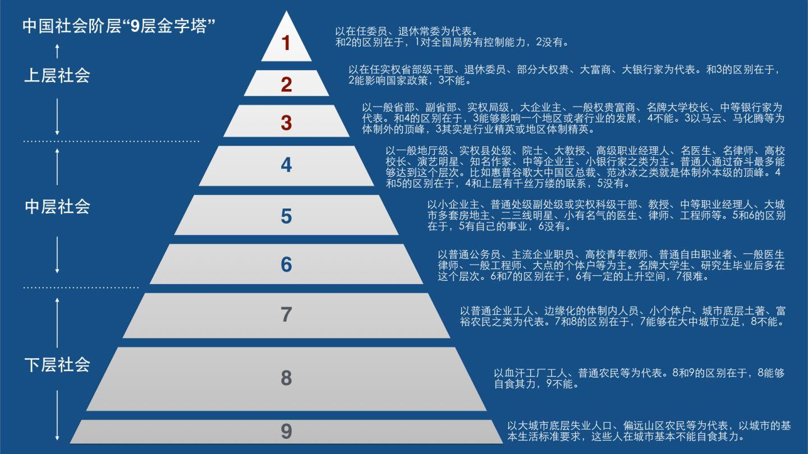

不同省份的升学率差异显著，不同阶段的升学路径预测逻辑也有所不同。
学校等级直接影响升学竞争力，请如实选择。
排名越靠前，获得优质教育资源的机会越大。
根据当前成绩，您可能考入以下高中，请选择最可能的一种。
选择专业将影响未来收入预期，可多选或选"暂不确定"。

—
—
本模拟所使用数据来源于各省教育考试院历年高考录取数据、中国薪酬网《全国高校毕业生薪酬排行榜》、麦可思研究院《中国本科生就业报告》等公开渠道。
以上数据基于历史统计，仅反映宏观规律，不构成任何升学或职业规划建议。每个人的实际发展受个人努力、机遇把握、行业周期、地域差异等多重因素影响，请理性参考。
各省升学率：基于各省教育考试院公布的历年高考录取统计数据，涵盖31个省级行政区。
学校等级加成系数：综合多省示范高中评估标准及高考升学表现数据整理。
教育路径→阶层映射：参考中国薪酬网、麦可思研究院等机构的就业与薪酬研究报告。
专业收入加权系数：基于麦可思研究院《中国本科生就业报告》各专业薪酬数据整理。